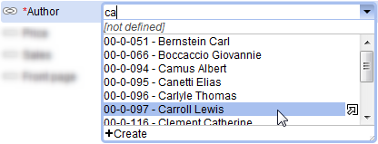
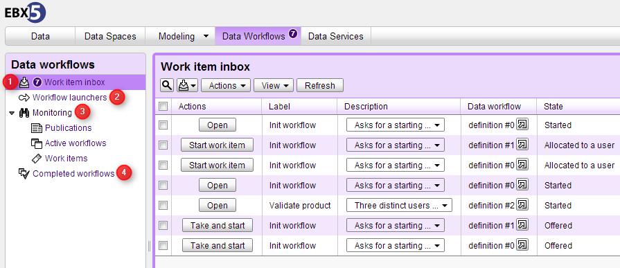
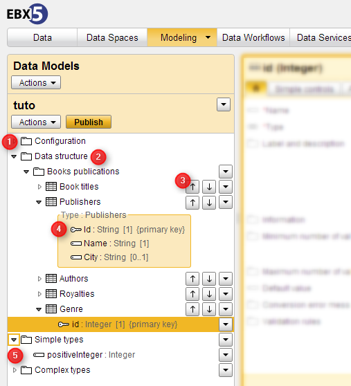

Release Date: March 5, 2013
This version contains numerous major enhancements, such as improved user interfaces for data workflows and the data model assistant. Significant improvements have been made upon the usability of EBX5 forms, namely with the introduction of a combo box selection widget, dynamic form validation, and dynamic lists. Another notable addition is the new custom layout API, which allows the implementation of highly customized forms to accommodate diverse end user needs.
Other notable new features include priorities for data workflows and the definition of reusable simple types. The product documentation is now available in PDF format, and the Data models and Data workflows sections have been completely refreshed.
This version includes all bug fixes and new features from the version 5.2.6.
A new combo box widget has been added to EBX5 to replace the old UIListSearch. It is more user-friendly, as it includes a text search to narrow down entries for enumerated lists and table references.

For backward compatibility reasons, the old UIListSearch widget remains in use for certain cases of UI beans.
Form fields are now validated using Ajax without requiring a form submission. After the user enters a value and changes focus away from the field, the input is validated and any resulting validation messages are displayed inline under the relevant field.
This automatic control also applies to contextual constraints. For example, if a field fieldB must be greater than fieldA in the same form, the constraint on fieldB is evaluated against the value currently entered for fieldA as soon as the user changes focus away from fieldB.
EBX5 data modeling allows the definition of dynamic and contextual enumerations, such as foreign key filters (osd:tableRef/filter) and programmatic enumeration constraints (osd:constraintEnumeration).
In such cases where the possible values depends on the value of another field in the same form, when the user interface widget is the new combo box (see section above), the values in the list are now refreshed as soon as the user changes focus away from the field on which the list depends. Previously, the user had to submit the entire form in order for the updated value of the field to be taken into account.
The old UIListSearch also benefits of this new feature.
A current limitation is that this does not work when the field on which the list depends is located under a complex terminal node. In this case, the user still needs to submit the form for the enumerated list to reflect the updated value of the field on which it depends.
A new presentation layer has been added on top of existing data model and permissions layers to allow the creation of highly-customizable forms. Key features of the layout layer include the ability to override the default automatically generated EBX5 forms and:
Create your own HTML layout with custom field placement and ordering
Integrate your custom layout elements seamlessly into the existing EBX5 user interface by leveraging provided API for styles and pre-built HTML/Ajax artifacts
Include auto-generated user interface widgets in your layout
Automatically trigger validation and other standard EBX5 transactions
Perform specific and dynamic updates in the client page, by specifying a JavaScript function to be triggered when a widget looses the focus
Support user permissions, as available in default forms
Configure rendering parameters for each form field, such as showing or hiding icons, showing or hiding labels, aligning fields vertically or horizontally
Rename buttons with custom labels
See UIForm in the Java API for information on these new features.
Known limitations
Some features have been planned for future releases but are not yet present in the current version.
It is not yet possible to include buttons that set complex terminal nodes to null ('Set field to [not defined]') in a custom layout
Permissions on fields in terminal groups are not yet taken into account in the display of forms
Data set inheritance is not yet supported with custom layouts. It is therefore recommended to disable inheritance when using a custom layout
Inherited fields are not yet supported for custom layouts. Custom layouts should not be used to manipulate such fields
More widgets for custom layouts will be added to the API, such as text areas and date and time input fields
To offer forms that are more visually lightweight, a new style of buttons called flat buttons have been included in this version. A flat button has no outline and is not embossed until the user hovers over it with the mouse cursor.
See UIButtonSpec.setRelief() in the Java API for information on this new feature.
A new method getURLForServiceSelection has been added to ServiceContext to launch a service on a record in the same session.
See getURLForServiceSelection in the Java API for more information.
Major updates have been made to the user interface of the Data Workflows area. Some notable improvements include:
The introduction of the Work items inbox, which entirely replaces the previous 'Work list' hierarchy. This "inbox" landing page provides access to a summary of all the work items that are relevant to the current user. From here, the user can perform actions pertaining to each work item, as well as view information and the comments of users on the work item.
A new Workflow launchers page, which gives supervisors a convenient means to launch data workflows from their publications.
A Monitoring section in the navigation pane providing access to information and available actions for users who have data workflow administration responsibilities.
The added ability for data workflow administrators to view historical information on data workflows that have already completed.

See Data workflows for more information.
It is now possible to assign a priority to a data workflow. This new property can be useful for sorting data workflows and work items. All the work items associated with a given data workflow will inherit its priority level, and thus be displayed with that priority.
By default, six priorities are provided: Very low, Low, Normal, High, Very high, and Urgent. A priority is associated with an integer value, a label, and an icon. The priorities available in the EBX5 repository are customizable in the Administration area. It is possible to add custom priorities and remove or modify the default priorities.
In the Administration area, it is also possible to specify a default priority for the repository. If this field is defined, all data workflows and their work items that have no priority defined will be displayed with the default priority in the Data Workflows area.
A priority can be set or modified in the following ways:
In the configuration of a workflow model, a default priority can be defined, which will be used to initialize data workflows launched from a publication of the model.
In the Data Workflows area, an administrator of the data workflow can perform a priority modification action from the 'Active workflows' view.
The Java API includes the following methods that can be used on workflows:
modifyProcessPriority in ProcessExecutionContext and all context subinterfaces that inherit from it, such as ScriptTaskContext, ConditionContext, UserTaskCreationContext, etc.
Significant changes have been made to the user interface of the data model assistant. Notably, the following improvements have been made:
The data model technical properties and configuration pages have been relocated to the 'Configuration' section directly in the navigation pane for easy access.
Editing of the data model's data structure is now entirely performed in the navigation panel of the interface. This allows the user to have consistent access to the structure of the data model and its elements.
Shortcut buttons have been added to allow easy repositioning of elements in the data structure at their current level.
A visual distinction is now made in the data structure when groups or tables are using reusable types. The structure of the reusable type is not directly modifiable under the group or table referencing the type, only through its definition under the section 'Complex types'.
Both simple and complex reusable types can now be created from the navigation pane at any time. Previously, reusable types could only be created at element creation time, and it was only possible for tables and groups.
The ability to customize the root of a data model has been added. It is now possible to delete the default root that is automatically added to all data models and create a new one with a custom name and localized labels and descriptions.

See Implementing the data model structure for more information.
EBX5 now supports the definition of reusable simple types. These reusable simple types can be defined both through the data model assistant or in a XML Schema Document data model.
See Reusable simple types for more information on defining reusable types using the DMA, and Simple type definition for information on simple types.
A service for transforming a group to a reusable complex type has been added. It is now possible from the data model structure to create a complex reusable type from a group. This can be useful for factorizing the structure of a data model using reusable types.
See Reusable types for more information on defining reusable types using the DMA.
It is now possible to directly create a primary key as a child of a group in the data structure of a data model using the data model assistant.
The data model assistant now supports the inclusion of existing data models in the current data model. Including an existing data model permits the use of reusable types defined in external data models. That is, it is now possible to share data types that are defined in existing XML Schema documents with a data model defined in the data model assistant. It is only possible to include existing embedded data models or data models packaged in modules.
See Including data types defined in other data models for more information.
It is now possible to include an embedded data model in an XML Schema Document using a specific URN targeting this embedded data model. A specific URN for including data models packaged in modules has also been added. That is, it is now possible to include a data model packaged in a module without specifying an absolute or relative path. Only the name of the module containing the data model and its path in this module are required.
See Including external data models for more information.
In a data model packaged in a module, it is no longer necessary to define dependencies in the associated module.xml to other modules in order to include external data models using the element xs:include. That is, when a data model includes a type defining Java resources that are not defined in the current module, the class loading of the module containing the included data models will be used automatically. However, dependencies are still needed in the file module.xml when including a type containing a resource in a module using the facet FacetOResource. In this case these dependencies are used for resolving aliases that indicate which EBX5 module contains the resource.
In the product documentation, the sections 'Data models' and 'Data workflows' of the User Guide have been completely refreshed in this version.
The documentation is now also available in PDF format, accessible in the navigation pane of the HTML documentation.
It is now possible to provide existing EBX5 repositories that use standalone H2 databases for tests based on the TestHelper API. The method getRepositoryCopyOfExistingH2StandaloneDB has been added to allow providing the location of a source H2 database to copy to a temporary directory for running tests.
Additionally, the method getNewRepository now uses H2 as its database. Previously, this method used an HSQL database.
See getRepositoryCopyOfExistingH2StandaloneDB, getNewRepository, and TestHelper in the Java API for more information.
The compilation process of schemas that depend on a repository, such as embedded schemas or schemas located inside the 'repository' directory on the application server, is now more strict. That is, this kind of schema now has to be resolved in the context of a repository. A compilation error is now raised if embedded schemas located inside the 'repository' directory are accessed not in the context of a repository. As a consequence, the method getInputStream() is no longer supported on schemas depending on a repository, and has become deprecated. It is now advised to use the method getInputStream(Repository) instead.
See getInputStream() and getInputStream(Repository) for more information.
The method of detecting when a user is leaving a page on which there is modified form content has been improved. Now, when the user closes the browser or if JavaScript changes the page's location or runs form.submit(), the system that checks for form modifications is called. If modifications are found, the user is prompted to confirm the page change.
For UI services that use standard forms, this implies the use of the standard built-in submit buttons in order to save input without unnecessarily asking for user confirmation.
You can have this mechanism ignore a specific form element by using the CSS class UICSSClasses.IGNORE_FORM_CHECK.
To avoid ambiguity, leading or trailing whitespaces are no longer permitted in role names in the default directory. If existing roles do not satisfy this constraint, they will continue to function normally in the user directory and for permissions. However, if a validation is requested, errors will be reported.
In previous versions of EBX5, for aggregated lists composed of a simple foreign key field (that is, an osd:tableRef), the default model-driven form generated a component that prevented specifying the same value twice in the list.
However, as this default control was only enforced by the user interface, duplicates were possible through imports, Java implementations, and data services updates. Furthermore, certain client scenarios required allowing such duplicates. As such, the local user interface no longer enforces this constraint. If a uniqueness constraint is required on aggregated lists composed of a simple foreign key, the appropriate programmatic constraint must be specified in the data model.
To enforce conformity with the XML Schema module declaration, when a module.xml contains a locales element without any nested locale elements, a ModuleDefinitionException exception is thrown when the module is loaded.
See Module packaging declaration for more information.
In order to upgrade your version of EBX5, perform the following steps:
Backup your repository, including the RDBMS and the directory ebx.repository.directory.
Replace the *.war and ebx.jar files on your application server.
[4837] In the DMA, wizards are unavailable when accessing a field from a validation report.
If the user accesses a field using a link from a validation report message, the DMA wizards are not available.
[5937] Fields are proposed for sort criteria that should not be.
After creating a simple view for a table that filters some fields, when the user creates sort criteria, all fields of the table are proposed instead of only the visible fields.
[6433] Role names in the default directory should not be allowed to have leading or trailing whitespaces.
To avoid ambiguity, leading and trailing whitespaces should not be allowed, enforced by a primary key default constraint.
[5752] Inputting certain special characters in primary key fields causes fatal errors.
When the user creates new records in a table containing a group and input a value containing special characters in a primary key field a fatal error may occur.
[2522] Foreign key label displayed in a read write field does not reflect modifications made using the preview button.
When a foreign key label, displayed in a read write field, is modified by accessing the field using the preview button, the selected foreign key label is not refreshed after submitting the form.
[4412] Roll-over labels remain displayed.
If the user hovers over a field label until the roll-over text is displayed and then uses the mouse scroll wheel, the roll-over text stays open instead of automatically dismissing after some time.
[5280] In the advanced search pane, it is possible to add criteria based on hidden fields.
In the advanced table search pane, users can add criteria based on hidden fields, and thus can filter table records using the values of hidden fields.
[5824] When using a permalink for a data space, user cannot return to the data space management screen.
When users access permalinks for data spaces, they can view the content of the data spaces, but have no way of returning to the data space management screen.
[6051] Validation messages are not displayed on read-only fields.
If a field has associated validation messages, the messages are not displayed when the corresponding input field is in read-only mode.
[6444] When defining a specific value access policy on a data set, nodes may not be fully displayed.
On data models with very few elements, the size of the specific value access policy display may be insufficient to use properly.
[6520] Some fields under data space information are not relevant to relational data spaces.
Some data space information fields such as 'Child merge policy' do not apply to relational data spaces and thus should not appear.